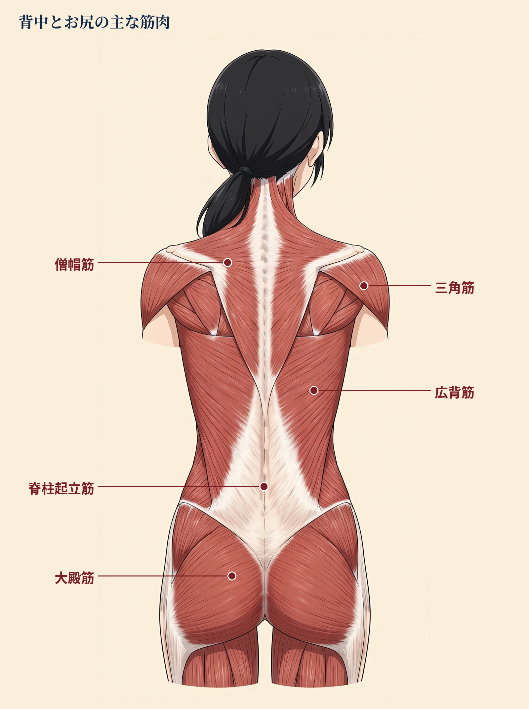

MUSCLE BALANCE
筋肉の張りとゆるみ
同じ姿勢を続ける暮らしでは、張りやすくなる筋肉と、働きが弱くなりやすい筋肉が決まった組み合わせで現れます。その仕組みと、バランスを取り戻す考え方を解説します。
筋肉は使われ方で役割が偏っていく
人の体には大小合わせて数百の筋肉があり、姿勢を保つ、関節を動かす、体を支えるといった役割を分担しています。ところが日常の動きには癖があるため、よく働く筋肉とあまり働かない筋肉の差が少しずつ広がっていきます。よく働く筋肉は短く縮んだ状態が続いて張りを感じやすくなり、働く機会の少ない筋肉は伸びたまま力が入りにくくなります。これが「張る筋肉」と「弱くなる筋肉」の組み合わせが生まれる仕組みです。この偏りは、運動不足だけが原因ではありません。デスクワーク、運転、立ち仕事、家事など、どの暮らしにも特有の姿勢と動きの繰り返しがあります。大切なのは、張っている場所だけを見るのではなく、反対側で弱くなっている筋肉との関係で捉えることです。図1のとおり、張りと弱さは体の前後・上下で対になって現れることが多いとされています。この偏りは、スポーツや趣味の場面でも生まれます。たとえばゴルフやテニスのように体の片側を使う動きが多い趣味では、使う側の筋肉が発達し、反対側との差が広がることがあります。趣味そのものは体を動かす良い機会ですが、終わった後に両側を均等にほぐす意識があると、偏りの蓄積を抑えられます。仕事、家事、趣味、移動。暮らしのどの場面にも偏りの種はあり、逆にいえば、どの場面にもバランスを取り戻す機会があります。自分の暮らしの繰り返しパターンを知ることが、筋肉のバランスを考える第一歩です。

張りやすい筋肉｜首・肩・胸・太ももの付け根
張りやすい筋肉の代表は、首から肩にかけての筋肉、胸の前側の筋肉、太ももの付け根の筋肉、ふくらはぎなどです。パソコンやスマートフォンを見る姿勢では、頭を支えるために首と肩の筋肉が働き続け、胸の前側は縮んだ姿勢のまま過ごす時間が長くなります。西中島のオフィスで一日画面に向かった日の夕方、肩まわりが重く感じる背景には、こうした持続的な働きがあります。また、座る姿勢が長いと太ももの付け根の筋肉は縮んだ位置で過ごすため、立ち上がったときに腰が伸びにくい感覚につながることがあります。新幹線や車での移動が長い日も同様です。張りやすい筋肉は、頑張りすぎている筋肉ともいえます。休ませること、ゆるめることに加えて、姿勢そのものを見直すことが、張りを繰り返しにくくする土台になります。首や肩の張りについては、目の使い方も関係します。画面を長時間見続けると、まばたきが減り、頭を前に出した姿勢が固定されやすくなります。モニターの高さや椅子の位置を調整して、頭の位置が自然に保てる環境を作ることは、筋肉の負担を減らす直接的な工夫です。西中島のオフィスでも、自宅のテレワーク環境でも、環境の調整は一度行えば毎日効果が続きます。張りを感じてからほぐすだけでなく、張りにくい環境を作ることも、筋肉のバランスを保つ大切な要素です。施術と環境調整の両面から考えることをおすすめしています。
弱くなりやすい筋肉｜お腹・お尻・背中・首の深部
一方で、弱くなりやすいのは、お腹の深い部分の筋肉、お尻の筋肉、肩甲骨を寄せる背中の筋肉、首の前側の深い筋肉など、姿勢を支える役割を持つ筋肉です。これらは大きな動きを生む筋肉ではないため、日常の中で「使っている」実感が乏しく、気づかないうちに働きが落ちていきます。たとえばお尻の筋肉は、歩くときや階段を上るときに骨盤を安定させる要ですが、座る時間が長い生活では出番が減ります。背中の筋肉が働きにくいと肩甲骨が開いたままになり、巻き肩の姿勢を支えられなくなります。弱くなった筋肉は、鍛えるというより、まず「思い出させる」ことが大切です。小さな動きで正しく働く感覚を取り戻すことから始めると、姿勢を支える力が少しずつ戻ってきます。施術でも、弱い側の働きを妨げている張りを先にゆるめる順序を取ることがあります。お尻の筋肉を日常で使う場面として、階段の上り方が挙げられます。一段ずつ、足裏全体で段を踏み、お尻の力で体を持ち上げる意識を持つと、お尻の筋肉がしっかり働きます。新大阪駅や御堂筋線の駅構内には階段の機会が多く、通勤そのものが実践の場になります。また、椅子から立ち上がるときに手を使わず、お尻と脚の力で立つことも小さな実践です。こうした日常動作の中で働く感覚を積み重ねることが、弱くなりやすい筋肉にとっては、まとまった運動と同じくらい意味のある刺激になります。
張りと弱さが姿勢に与える影響｜上下の交差の考え方
張る筋肉と弱くなる筋肉の偏りは、体の上半身と下半身で似たパターンとして現れることが知られています。上半身では胸の前と首の後ろが張り、首の前と背中が弱くなる組み合わせが、下半身では太ももの付け根と腰が張り、お腹とお尻が弱くなる組み合わせが見られやすくなります。この偏りが重なると、骨盤の傾きや肩の位置といった姿勢の特徴として表れてきます。たとえば下半身のパターンは骨盤の前傾と関わり、上半身のパターンは頭が前に出る姿勢と関わります。御堂筋線の車内でスマートフォンを見る姿勢と、オフィスでの座り姿勢が重なる方は、両方のパターンが同時に進みやすい暮らしともいえます。一つの筋肉だけの問題としてではなく、全体のバランスとして見ることが、ケアの順序を決めるうえで役立ちます。上下のパターンは、呼吸の仕方にも影響します。胸の前が張って肩が内側に入ると、胸郭が広がりにくくなり、呼吸が浅くなることがあります。反対に、背中の筋肉が働いて肩甲骨が安定すると、胸が開いて深い呼吸がしやすくなります。姿勢と呼吸は切り離せない関係にあり、筋肉のバランスを整えることは、呼吸のしやすさにもつながります。下半身のパターンについても、骨盤の傾きが呼吸に使う横隔膜の動きと関わるため、全身は一つのつながりとして働いています。部分のケアが全体に影響する理由は、こうした連動にあります。
施術とセルフケアの役割分担｜ゆるめることと使うこと
張りと弱さへのアプローチには、大きく分けて二つの方向があります。一つは、張っている筋肉をゆるめることです。手技による圧や、温めること、ゆっくり伸ばすストレッチがこれに当たります。もう一つは、弱くなっている筋肉を働かせることです。こちらは施術だけで完結するものではなく、日常の動きの中で少しずつ使っていく過程が中心になります。ステラカストル新大阪の施術では、90分の中で張りの強い部位を丁寧にゆるめ、姿勢の土台が働きやすい状態を整えることを目的としています。そのうえで、ご自宅や職場で無理なく続けられる小さな動きをお伝えします。ゆるめることと使うことは対立するものではなく、両輪です。片方だけではバランスは戻りにくいからこそ、施術と日常の工夫を組み合わせる考え方を大切にしています。役割分担を考えるうえで、順序も大切です。張りが強い状態のまま弱い筋肉を無理に使うと、体は別の筋肉で代用してしまい、狙った筋肉が働きにくいことがあります。そのため、まず張りをゆるめて関節の動きを確保し、その後に小さな動きで弱い側を使う順序が基本になります。ステラカストル新大阪では、施術後に行うセルフケアとして、その順序に沿った無理のない動きをご案内しています。焦って負荷を上げるより、正しい順序で小さく続けることが、バランスを取り戻すための確かな進め方です。
今日からできる小さな実践｜張りをためない暮らし方
筋肉のバランスを保つ実践は、特別な運動でなくても構いません。デスクワークの合間に肩甲骨を寄せる動きを数回行う、通勤の駅までの道で歩幅を少し広げてお尻を使う意識を持つ、エスカレーターではなく階段を選ぶ日を作る。こうした小さな選択が、弱くなりやすい筋肉の出番を増やします。張りやすい部位には、帰宅後の入浴で温める、深呼吸をしながら首や肩をゆっくり回すといった「休ませる時間」を意識して作ることが助けになります。出張先のホテルでも、タオルを使った軽いストレッチなら場所を取りません。大切なのは、頑張る日と休ませる日のメリハリです。張りを感じたら体からのサインとして受け止め、ため込む前にほぐす習慣を持つことが、バランスを大きく崩さないための暮らし方につながります。実践を続けるコツは、生活の流れに組み込むことです。歯磨きの間に片脚立ちをする、湯船につかりながら首を回す、駅までの道で最後の100メートルだけ歩幅を広げる。新しい時間を確保するのではなく、既にある時間に小さな動きを重ねる方法は、忙しい方でも続けやすくなります。また、張りの強さは日によって違うため、その日の状態に合わせて実践の量を調整する柔軟さも大切です。調子のよい日に少し多めに、疲れた日は休ませることを優先する。メリハリのある続け方が、筋肉のバランスを長期的に支えます。
関連する症状・お悩み
よくあるご質問
張っている筋肉は強いのですか？
張りは強さとは別で、縮んだ状態が続いて休めていないサインの場合があります。反対側の筋肉の働きと合わせて見ることが大切です。
弱い筋肉は筋トレをすればよいですか？
いきなり負荷をかけるより、小さな動きで正しく働く感覚を取り戻す段階から始めるのが一般的です。体の状態に合わせて無理のない方法を選んでください。
ストレッチは毎日必要ですか？
毎日でなければ効果がないというものではありません。張りをため込む前に、短時間でもこまめにほぐす習慣が続けやすい方法です。
施術では弱い筋肉も鍛えてもらえますか？
施術は筋肉を鍛える場ではありません。張りをゆるめて働きやすい状態を整え、日常で使える小さな動きをご案内する役割分担です。
専門解説シリーズ
施術者について
平賀 伸人（ひらが のぶひと／男性セラピスト）｜施術歴30年。鍼灸師（国家資格）・登録販売者・アロマセラピスト・パーソナルトレーナーの資格を持ち、オイルマッサージと美容整体を、その日の状態とご希望に合わせて組み合わせて施術します。このページの内容は、施術者の知識と経験をもとに作成しています。
料金・店舗情報
オイルマッサージ＋美容整体 90分 10,000円（税込）｜コースは1つだけです。有料の追加オプションの販売はありません。お支払いは現金のみです。
住所：大阪市淀川区西中島7-2-13（新大阪駅・大阪メトロ御堂筋線 南口から徒歩3分）｜営業時間：月〜土 17:00〜22:00・日曜休み｜女性専用・完全予約制｜当サロンでは鍼灸施術は行いません。
ご予約・お問い合わせ
ご予約はLINE公式アカウントで受け付けています。ご希望の日時をお送りください。変更・キャンセルはLINEでご連絡ください。キャンセル料はいただきません。